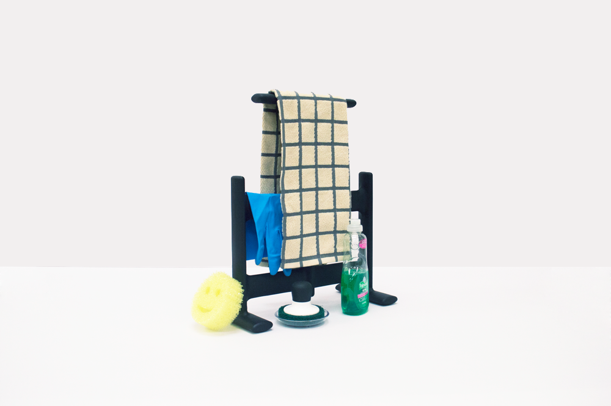
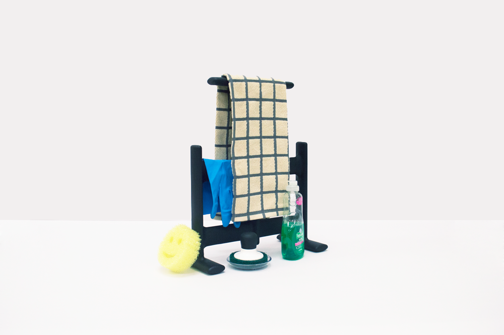
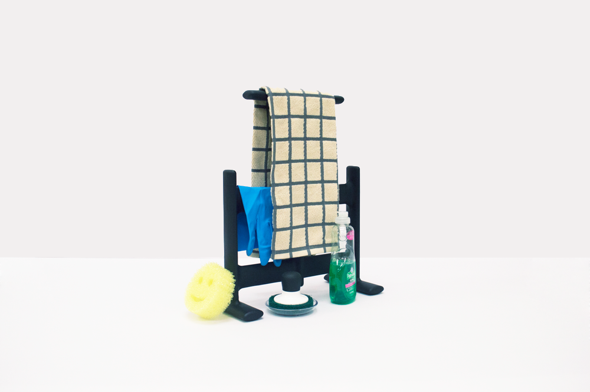
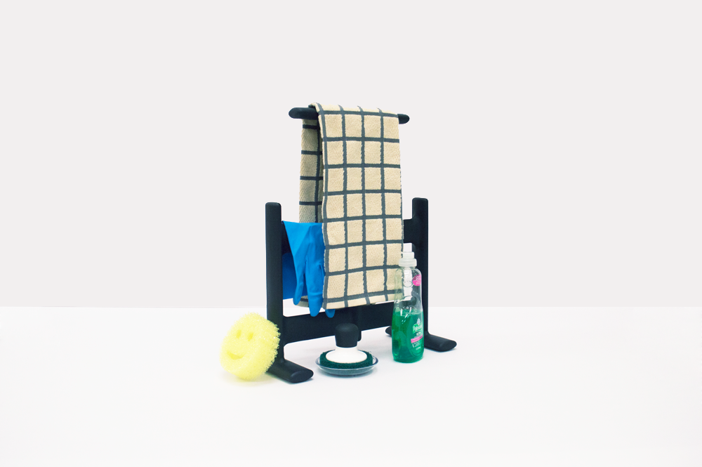
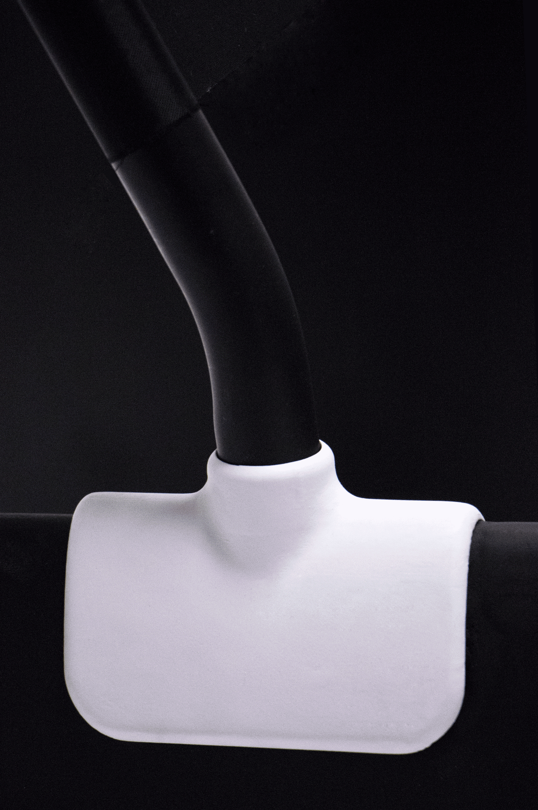
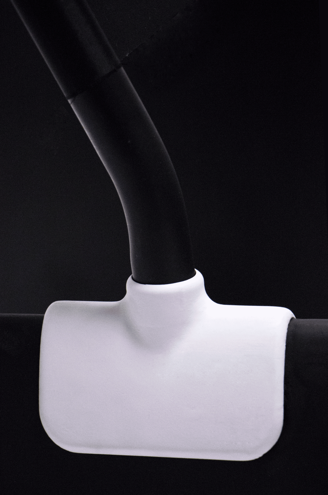
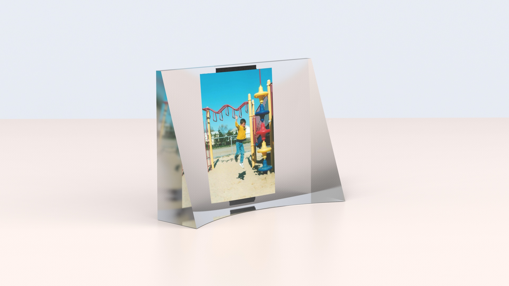
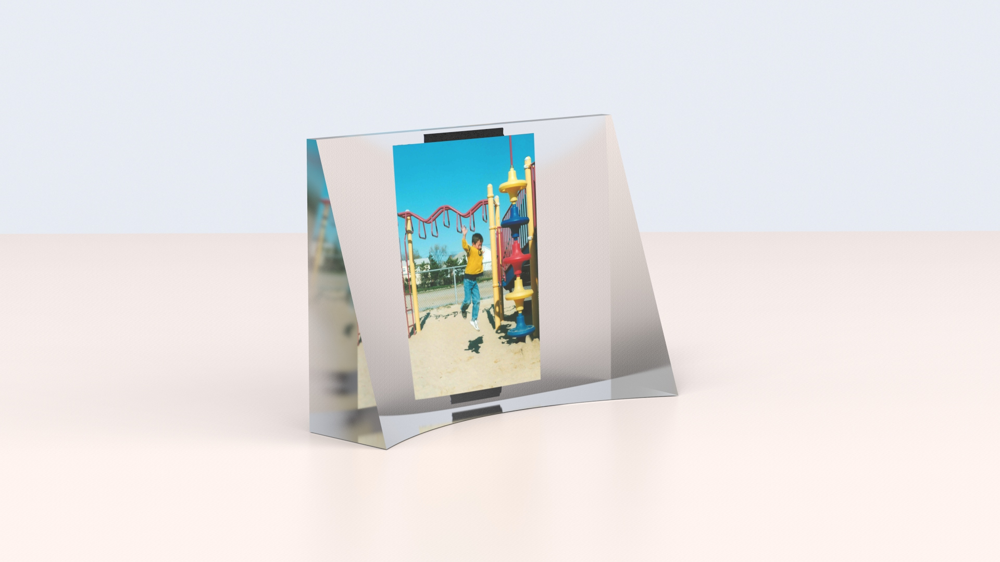
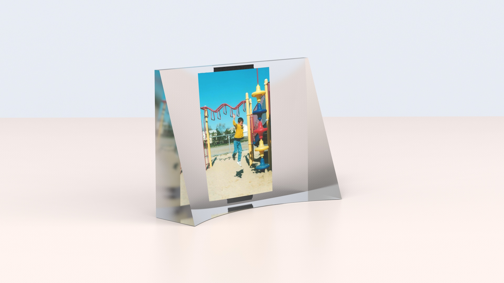
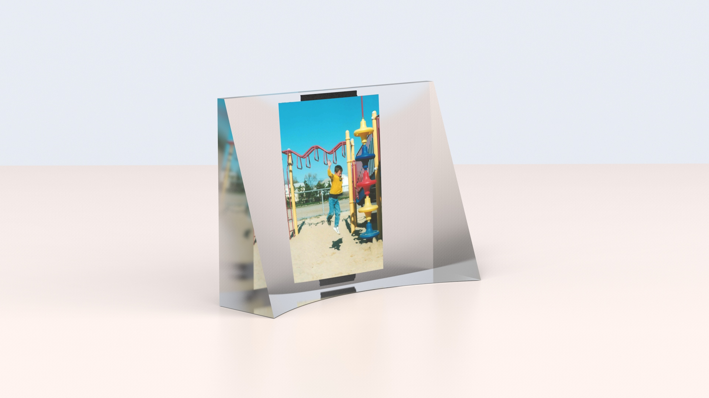

Tim Zarras
About
Tim Zarras is a recent graduate (2016) of the Furniture Design Department at the Rhode Island School of Design.
His focus encompasses furniture and objects, web design and development, creative direction, and imagery.
In recent months, Tim has been operating on a freelance basis under the title of With & For, designing and developing simple websites for people and small organizations. While doing so, he has been developing other skills in the realm of computer interfaces.
He has an Instagram as well.
Say hello : tzarras@alumni.risd.edu
Website built by Tim Zarras
© Tim Zarras 2016. All Rights Reserved
All project photos taken by Tim Zarras
GH 1 OS ( Concept / Work in Progress )
2017

A concept for an application to control a space heater that I designed in 2015 titled GH 1. This is one of my first explorations into a simple UI to be paired with a physical device. Users would be able to manually set temperatures or select a desired room temperature and the heater would be set automatically. The application would collect usage data and could inform users on information such as their average selected temperature and relative electrical usage. As well, it could notify users periodically to remind them if their device is still running in hopes of preventing an all too common cause of housefires.
The application would aim to modernize and optimize our interactions with an object that has proven itself somewhat cautionary, but undeniably useful for many.
Mock-ups designed in Sketch.
2016
Display Objects
 

 


These armatures are for the organization and framing of collections, areas of collection, and objects that inevitably decorate people's homes.
Through the composition and treatment of the objects that live within them, these objects intend to instill a sense of pride in whatever a user may own. As well, they are a nod to more sustainable practices like reusing cups which were only used for water, or simply using a dish towel more than one would use paper towels.
These are advanced concept models. Imagined in nylon - actually made of machined plywood, and PLA.
2015
GH 1


A form study / concept for a column heater. The heater is intended for gallery spaces as a supplementary solution to basic climate control issues - that of which are crucial in preserving artworks. Understanding the distant way in which viewers would acknowledge and approach it - when placed in a space, I liked the idea that it may also behave as an artwork.
The heater can be stored vertically to take up minimal space.
As the precursor to my Senior Degree Project, this project served as a vehicle to raise questions on the use and perception of objects / products analogous to our experience of artworks.
This is an advanced concept model. Imagined in steel and polypropylene - actually made of machined plywood, and PLA.
t 21 i
2015
 

t 21 i is an excersise in working with a semi-fictional context in mind and looking elsewhere for furniture forms- in hopes of bringing you elsewhere.
This is an advanced concept model. Imagined in polypropylene, ABS, steel and nylon - actually made of machined poplar, ABS, steel and nylon.
2015
Garden Chair

A garden chair that's meant to co-exist amongst the lawn / yard landscape. The reserved form of the chair suggests that it is equally as much a tool for sitting, as it is for any other form of use in this setting.
Legs and back are constructed as solid bent laminations.
Dyed ash.
Renderings
2016
 


 


Assorted concept renderings.
Modeled in Solidworks and rendered in Keyshot.